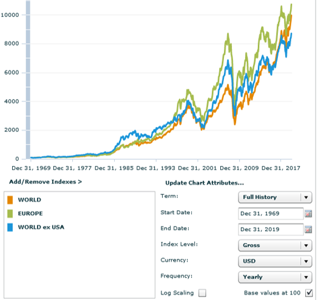

פורסם בתאריך 3.1.2021
התכנים בפוסט זה, כמו כל שאר התכנים בבלוג, הינם תכנים לימודיים במהותם, הם אינם מהווים ייעוץ או המלצה לביצוע פעולה בנייר ערך, ואין לראות בהם תחליף לייעוץ השקעות ו/או ייעוץ פנסיוני המתחשב בצרכיו הייחודיים של כל אדם.
למשקיעים פאסיביים ישראלים קיימות שלוש חלופות מרכזיות להשקעה בקרנות מחקות מדד – קרנות ישראליות, אמריקאיות ואיריות (קרנות = קרנות סל או קרנות נאמנות). אין הכוונה להשקעה במדדים של הבורסה בישראל, בארה"ב או באירלנד, כיוון שאין קשר בין המדדים אחריהן עוקבות הקרנות לבין מקום ההתאגדות שלהם. במילים אחרות – אם משקיע ישראלי רוצה לעקוב אחרי מדד ה-S&P 500 או MSCI World למשל, הוא יכול למצוא קרן ישראלית, אמריקאית ואירית העוקבות אחרי אותו מדד, ולמרות שלכאורה כולן עוקבות אחרי אותו מדד, עדיין קיימים הבדלים לא קטנים בין הקרנות.
למי שעוד לא מכיר את העניין של קרנות איריות, החלק הראשון של הפוסט יתחיל בהשוואה בין קרנות ישראליות, אמריקאיות ואיריות – על יתרונותיהן וחסרונותיהן. המשך הפוסט ידון באיך רוכשים קרנות איריות, ובחלופות השונות להשקעה בהן עבור משקיעים פאסיביים ישראלים, כולל עדכונים מהתקופה האחרונה.

הקדמה – Israel vs US vs Ireland
מה הבעיה בקרנות ישראליות?
לקרנות הישראליות שתי בעיות מרכזיות:
1. קרנות ישראליות גובות לרוב דמי ניהול גבוהים יותר בהשוואה לקרנות זרות כמו איריות ואמריקאיות. תופעה רווחת בקרב קרנות ישראליות היא שהן מונפקות עם דמי ניהול אפסיים כדי להיראות אטרקטיביות, אך מעלות את דמי הניהול לאחר שנה/שנתיים. זאת לעומת היסטוריה של יציבות ואף הורדת דמי ניהול בקרב הגופים המובילים לקרנות איריות ואמריקאיות (כמו ואנגארד ובלאקרוק). יחד עם זאת, הפערים הם לא אסטרונומיים ומגיעים לסדר גודל של כ-0.2%. כל עוד מדובר בקרנות פאסיביות לא מגיעים לרוב למחוזות של 0.6%-2% כמו בקרנות מנוהלות אקטיבית (שגם מפגרות ברובן המוחלט אחרי המדדים).
2. קרנות ישראליות על מדדי חו"ל נחשפות למדדים באמצעות חוזים עתידיים, כאשר העקיבה היא אחרי גרסת ה-NTR של המדד (Net Total Return). מדד (TR (Total Return כולל השקעה מחדש של הדיבידנדים, ו-NTR אומר שהדיבידנדים הושקעו מחדש אחרי ניכוי מס במקור של 30% בגינם. כמה זה משמעותי? הרבה יותר מדמי הניהול! תשואת הדיבידנדים של מרבית מדדי המניות עומדת על כ-2-2.5% בממוצע לשנה. קחו 30% מזה, ותקבלו סדר גודל של כ-0.6-0.75% מכל התיק, כל שנה. לא מעט.
מה הבעיה בקרנות אמריקאיות?
קיימות המון קרנות פאסיביות אמריקאיות בדמי ניהול נמוכים מאוד, כך שמבחינת המבחר אין בעיה. אבל גם לקרנות האמריקאיות יש שתי בעיות מרכזיות:
1. כל הקרנות האמריקאיות מחוייבות רגולטורית לחלק דיבידנד, ועל הדיבידנד המחולק בית ההשקעות מנכה 25% מס במקור לממשלת ארה"ב, שהמשמעות שלו היא אובדן תשואה של כ-0.5-0.6% לשנה. במילים אחרות, זה כאילו מישהו החליט בשבילכם "קחו קצת כסף" (ותחטפו עליו אירוע מס), גם אם אתם לא רוצים לקבל תקבולים מהתיק ומעדיפים שהדיבידנדים יישארו מושקעים וימשיכו לייצר תשואה עם ריבית-דריבית. החיסרון הזה עוד יותר משמעותי באפיקים פטורים ממס או עם הטבות מס, כמו קה"ש/קופ"ג IRA.
2. במקרה והלכתם לעולמכם בעודכם מחזיקים קרנות אמריקאיות – ייגבה מיורשיכם מס עיזבון בגובה 35% מתוך שווי התיק ולא מתוך הרווח (קיים פטור עד כ-$60,000). חיסרון זה לכשעצמו מספיק למשקיעים רבים (בעיקר בעלי ילדים, ואפילו רווקים צעירים שחושבים לטווח ארוך) להשתדל להימנע מלהשקיע בקרנות אמריקאיות. מס העיזבון חל על החשבון הפרטי בלבד, ובחשבון משותף לשני בני הזוג יחול מס עיזבון על חצי מהתיק במקרה פטירה של אחד מבני הזוג. ב-IRA אין מס עיזבון כי הבעלים של החשבון הוא החברה המנהלת ולא העמית, והחברה המנהלת כאילו מעניקה יפוי כח לעמית לביצוע פעולות בחשבון.
מה היתרונות והחסרונות של הקרנות האיריות?
לקרנות האיריות מס' יתרונות בהשוואה לקרנות אמריקאיות וישראליות:
1. דמי הניהול לרוב יהיו מעט זולים יותר מהקרנות הישראליות (אך מעט יקרים יותר מהאמריקאיות).
2. מרבית הקרנות האיריות הן קרנות צוברות אשר משקיעות מחדש את הדיבידנדים ברוטו ממס, כלומר GTR (Gross Total Return) ולא NTR. יחד עם זאת, למרות שההשקעה מחדש מוגדרת כברוטו ממס, עדיין מדינות מסוימות מנכות מס במקור, אם כי הוא מופחת בהשוואה ל-30% ניכוי מס במקור בקרנות הישראליות ו-25% על הדיבידנדים המחולקים בקרנות אמריקאיות. ארה"ב היא המדינה ה"בעייתית" ביותר בהיבט הזה והיא גובה 15% מס במקור על דיבידנדים של חברות אמריקאיות (בהתאם לאמנת המס בין אירלנד לארה"ב). בשאר המדינות נגבה בממוצע כ-8% מס במקור בלבד. אם נסתכל על מדד גלובלי הכולל כ-57% מניות אמריקאיות, אזי ממוצע ניכוי המס במקור על הדיבידנדים יעמוד על כ-12% בלבד, כלומר כ-0.24-0.3% מתך התיק לשנה, כמחצית המיסוי לעומת קרנות אמריקאיות.
בחשבון פטור ממס כמו קה"ש IRA, קרן אירית תהיה עדיפה באופן ברור בהשוואה לקרן אמריקאית שעוקבת אחרי אותו מדד, כיוון שהמיסוי על דיבידנדים מופחת ובשני המקרים אין מס רווחי הון במכירה. יחד עם זאת, בתיק הפרטי (הממוסה) קיים כפל מס על מרכיב הדיבידנדים: הסכומים שהתקבלו כדיבידנדים מוסו פעם אחת (במיסוי מופחת) בעת קבלתן, הושקעו מחדש במדד לאחר מס, והמשיכו לצבור תשואה. כאשר נמכור את הקרן נמוסה במס רווחי הון גם על סכומי הדיבידנד שהושקעו מחדש וכבר מוסו, כלומר מדובר בכפל מס. שימו לב שמדובר בכפל מס על מרכיב הדיבידנדים בלבד, ולא על כל התשואה.
מתי קרנות איריות עדיפות על קרנות אמריקאיות בתיק הפרטי ומתי זה הפוך?
היתרון של הקרנות האיריות מתבטא במיסוי מופחת על הדיבידנדים, ואותו חלק שנחסך במיסוי ממשיך להישאר מושקע ולייצר תשואה עם ריבית-דריבית. לעומת זאת קיים החיסרון של כפל המס שהזכרנו: החלק ששולם כדיבידנד ממוסה פעמיים. פעם אחת יורד ממנו ניכוי מס במקור של כ-12%, והדיבידנד מושקע מחדש לאחר מס. בפעם השניה אותו חלק ממוסה ב-25% במכירה (מס רווחי הון). לכן מרכיב הדיבידנד ממוסה כך: div * 88% * 75% = 66%, כלומר 34% מס על מרכיב הדיבידנד.
בעצם יש כאן יתרון וחיסרון ש"נאבקים זה בזה" – דחיית מס מול כפל מס. מהשוואה שביצעתי, במכירה אחרי פחות מ-20 שנה יש יתרון קל לאמריקאיות, ובמכירה אחרי יותר מ-20 שנה יש יתרון קל לאיריות, יתרון שהולך וצומח עם השנים. זה קורה בגלל שדחיית המס על הדיבידנדים באה לידי ביטוי בעיקר בטווח הארוך, אחרי שצברה מספיק ריבית-דריבית, אז היא גוברת על כפל המס.
משקיעים פאסיביים רבים מעדיפים לרכוש קרנות אמריקאיות בתיק הפרטי (הממוסה) כדי להימנע מכפל המס וקרנות איריות בתיק הפטור (IRA). לטעמי הקרנות האיריות עדיפות גם בתיק הפרטי, מכמה סיבות:
1. אם משקיעים לטווח של יותר מ-20 שנה הן עדיפות, ולרוב השקעה מנייתית היא השקעה לטווח ארוך.
2. גם אם מתכננים לממש תוך פחות מ-20 שנה, קיים סיכוי סביר שנממש רק חלק מהסכום ולא את כולו.
3. גם אם משקיעים לטווח קצר מ-20 שנה, היתרון לאמריקאיות הוא יתרון קל בלבד, ובשביל היתרון הקל הזה חבל לקחת את הסיכון של מס העיזבון.
הערה חשובה לבעלי אזרחות אמריקאית: כדאי לכם מאוד להימנע מהשקעה בקרנות איריות, ישראליות ומכל קרן צוברת באשר היא. קרנות אלה מוגדרות קרנות PFIC והן ממוסות בכבדות, הרבה יותר מאשר החיסכון במיסוי על דיבידנדים, כלומר בעלי אזרחות אמריקאית צריכים להחזיק בקרנות אמריקאיות (או לנהל את החשבון ע"ש בן/בת הזוג בלבד אם אין להם אזרחות אמריקאית). אזרחים אמריקאים גם פטורים ממס עיזבון עד כ-11 מיליון דולר, כך שהחשש הזה מבוטל אלא אם אתם טייקונים. האמור מתייחס לתיק הפרטי בלבד ולא ל-IRA.
איך משקיעים בקרנות איריות
אימפריות אמריקאיות לקרנות פאסיביות פותחות חברות בנות באירלנד
בעשור האחרון שתי האימפריות הגדולות בעולם של קרנות סל, בלאקרוק (באמצעות המוצג iShares) ו-Vanguard, פתחו חברות בנות באירלנד, שאיפשרו להן להנפיק קרנות איריות צוברות, עם כל היתרונות שצוינו בתחילת הפוסט. אליהן הצטרפו גופים נוספים כמו SPDR, Invesco, VanEck Vectors ו-WisdomTree. חיפוש קרנות איריות ניתן לבצע כאן וכאן.
משקיעים פאסיביים יכלו לבחור במס' לא קטן של אפשרויות לבניית תמהיל התיק שלהם, כאשר עם הזמן היצע הקרנות התרחב, וכן חל תהליך של הוזלת דמי ניהול בקרנות קיימות, שהפך קרנות שלא היו אטרקטיביות בעבר לרלוונטיות יותר. מדובר בתהליך דומה לזה שמתרחש בקרנות האמריקאיות, וצפוי להמשיך גם בעתיד.
איפה נסחרות הקרנות האיריות?
מרבית הקרנות נסחרות במקביל במס' בורסות אירופאיות, כדוגמת הבורסה בלונדון, אמסטרדם, שוויץ, גרמניה ואיטליה, ובמטבעות שונים. זה אומר שמרבית הקרנות הן דואליות – ואם קנינו קרן מסוימת שנסחרת בבורסת לונדון בדולרים או בליש"ט, זה בדיוק אותו דבר כמו לרכוש אותה בגרמניה ביורו. בדומה למניות דואליות – ניתן גם לרכוש יחידות של הקרן בלונדון בדולרים, להמיר אותה באמצעות בית ההשקעות למקבילה שלה ביורו בגרמניה, ולמכור אותה שם. ממש כמו שאפשר לקנות מניות של טבע בארץ בשקלים, ואח"כ למכור אותן בניו-יורק בדולרים. באוגוסט 2019 חלק מהקרנות האיריות של בלאקרוק התחילו להיסחר בארץ בשקלים, מה שמאפשר לנו לרכוש קרנות איריות מצוינות דרך הבנקים ובתי ההשקעות בארץ בעלויות נמוכות יותר – עוד על כך בהמשך.
איך רוכשים קרנות איריות ומה העלויות?
קודם כל חשוב להדגיש שניתן לרכוש קרנות זרות, כאלה הנסחרות בארה"ב או באירופה, דרך כל בנק או בית השקעות ישראלי, ולא נדרש חשבון בברוקר זר. בבנקים ניתן לעשות זאת אונליין, אך ברוב המוחלט של המקרים כדאי לנהל את התיק הפרטי בבית השקעות ולא בבנק, כי אין שם דמי משמרת, ועלויות הקנייה ובמיוחד המרת המט"ח זולות יותר. בבתי ההשקעות בארץ לרוב לא ניתן לבצע את הרכישה אונליין, אלא טלפונית דרך חדר מסחר ני"ע זרים. לנרתעים מכך אציין שעשיתי זאת פעמים רבות, ושזה לוקח 2 דק' בכל מקרה – במקום להתחבר לחשבון ולהזין סימול, כמות ומחיר, מרימים טלפון ואומרים לנציג סימול, כמות ומחיר. קרנות איריות הנסחרות בבורסה בארץ בשקלים ניתן בכל מקרה לרכוש אונליין דרך המערכת של בתי ההשקעות.
העלויות לרכישת קרנות הנסחרות באירופה יקרות מעט יותר מהעלויות לרכישה בארץ (לרוב מדובר על כ-0.15% מהעסקה באירופה לעומת 0.09% בארץ), אבל זה לא פער דרמטי, בטח לא למשקיעים פאסיביים לטווח ארוך שמבינים שעלות הרכישה היא עלות חד פעמית. העלות הכבדה יותר היא עלות המרת המט"ח שעומדת על כ-0.5-0.6% מהעסקה. בנוסף, קיימת עמלת מינימום גבוהה יחסית, לרוב כ-30 מהמטבע בו נסחרת הקרן (נניח דולר או יורו). עמלת המינימום אומרת שמחשבים את העמלה באחוזים (למשל 0.15% מהעסקה) ואם הסכום לא מגיע ל-30, אז נשלם 30. למשל, אם קנינו ב-$10,000, חישוב העמלה נותן 0.15% * $10,000 = $15, ובגלל שהוא נמוך מ-$30, העמלה תהיה $30. המינימום הגבוה הופך קניה בסכומים קטנים ללא כדאית, ואם רוצים להימנע לחלוטין מהשלמה למינימום צריך לרכוש ב-$20,000 לפחות. מה עושים עד שצוברים סכום כזה? אפשר לרכוש בינתיים קרנות שנסחרות בארץ בשקלים, ואחת לתקופה למכור אותן ולקנות בחו"ל, או להתמקד בעיקר בקרנות שנסחרות בארץ בשקלים. בהמשך הפוסט נבצע השוואת חלופות.
מהי החשיפה למט"ח?
כיוון שקרנות רבות נסחרות במטבעות שונים, קיימת שגיאה תפיסתית נפוצה בנוגע לחשיפה למט"ח, שחשוב מאוד להפריך אותה. אז ככה: אין שום קשר בין המטבע בו קניתם קרן מסוימת לבין החשיפה שלכם למט"ח. מה שקובע את החשיפה שלכם למט"ח זה המניות שהקרן מחזיקה ולא המטבע בו רכשתם אותה, כך שאם קניתם למשל קרן של ה-S&P 500 בשקלים, ביורו או בליש"ט, אתם לא חשופים לאף אחד מהמטבעות האלה, אלא רק לדולר! כאשר רכשתם יחידות של הקרן, נכנס כסף לקופת הקרן ומנהל הקרן ירכוש באמצעות הכסף הזה את המניות שמרכיבות את המדד. לכן אם הקרן עוקבת S&P 500, מנהל הקרן יצטרך לרכוש 500 מניות אמריקאיות בדולרים. ככה שאם רכשתם במטבע ששונה מהדולר, מנהל הקרן ימיר את הכסף לדולרים כדי לרכוש את המניות במדד. לכן קרן הנקובה בליש"ט או ביורו לא חושפת אותנו בכלל לליש"ט או ליורו.
שגיאה נוספת באותו עניין נובעת מהסתכלות על תשואות הקרן במטבע השונה מהחשיפה המטבעית שלה והשוואה למדד. למשל, רכשתם קרן עוקבת S&P 500 (שחשופה כאמור לדולר) בשקלים, וכאשר אתם מסתכלים על התשואה בחשבון שלכם, שמופיעה בשקלים, אתם רואים שהיא שונה מתשואת המדד שבדקתם ביאהו פייננס. למשל מצב שבו המדד עלה ב-20% ושווי האחזקה השקלי שלכם בשקלים עלה רק ב-10%. הפער בתשואות נובע מהפער בשקל מול הדולר – במונחים דולריים הקרן שלכם עלתה ב-20%, אבל אם השקל התחזק מול הדולר אתם תראו עליה נמוכה יותר במונחים שקליים.
החלופות השונות להשקעה בקרנות איריות
חלופות לפיזור גלובלי
בחלק זה נסקור מס' אפשרויות שונות להרכבת תיק המאפשר פיזור גלובלי רחב, ששואף לכלול מניות מכל המדינות בעולם ומכל הגדלים, או תמהיל הקרוב לכך. טרום עידן הכניסה של בלאקרוק לישראל, היו שתי חלופות מובילות:
1. שילוב של SWDA (או IWDA כפי שהיא נקראת בגרסה הפופולרית שלה בבורסת לונדון) יחד עם EIMI. שתי הקרנות הן של בלאקרוק, הראשונה עוקבת אחרי מדדMSCI World הכולל כ-1,650 חברות גדולות-בינוניות מכל העולם המפותח, בדמי ניהול של 0.2% (שימו לב שהמדד אמנם נקרא MSCI World, אבל השם שלו מטעה והוא אינו כולל את כל העולם. המדד של MSCI שכולל את כל העולם נקרא MSCI All Country World ונחזור אליו בהמשך). הקרן השניה עוקבת אחרי מדד MSCI Emerging Markets IMI שכולל כ-2,800 מניות מכל הגדלים מהמדינות המתפתחות, בדמי ניהול של 0.18%. היחס בין המדינות המפותחות למתפתחות במדד המניות העולמי עומד על כ-90%/10% לטובת המפותחות, אם כי ניתן לבחור להקצות משקל שונה בהתאם להעדפת המשקיע.
2. הקרן VWRA של ואנגארד שעוקבת אחרי מדד FTSE All World Index הכוללת כ-4,000 מניות גדולות-בינוניות מכל העולם (כלומר מדינות מפותחות ומתפתחות כאחד), בדמי ניהול של 0.22%.
שתי האפשרויות הללו עדיין לא מספקות כיסוי מלא של כל העולם, כיוון שהן משמיטות את כל המניות הקטנות של העולם המפותח. כדי להשלים אותן ניתן לבחור את הקרן WSML של בלאקרוק שעוקבת אחרי מדד MSCI World Small Cap Index בדמי ניהול של 0.35%, או באמצעות קרן הנאמנות של ואנגארד שעוקבת אחרי אותו מדד בדמי ניהול של 0.29%. קרנות נאמנות לא נסחרות בבורסה וניתן לרכוש אותן רק דרך חדר המסחר תוך ציון סימול ISIN, במקרה הזה הסימול הוא IE00B3X1NT05. המניות הקטנות מהוות כ-15% מכלל השוק, אבל ניתן לשקול להקצות להן משקל גבוה יותר, כיוון שמניות קטנות רווחיות יותר לטווח הארוך ממניות גדולות.
במרץ 2019 הונפקה קרן חדשה של ואנגארד בשם VHVE, העוקבת אחרי מדד FTSE Developed World הכולל כ-2,200 מניות גדולות-בינוניות מהעולם המפותח בדמי ניהול של 0.12%. הקרן חופפת כמעט לחלוטין ל-SWDA, שתיהן עוקבות אחרי המניות הגדולות-בינוניות של העולם המפותח, רק שהמדד של FTSE כולל כ-600 מניות יותר. הסיבה לכך היא שהקו בין מניות גדולות לקטנות נחתך קצת אחרת לעומת המדד של MSCI, וכן בגלל העובדה ש-FTSE כוללים את דר' קוריאה ופולין במדינות המפותחות, לעומת MSCI שכוללים אותן במדינות המתפתחות (ולכן הן נכללות ב-EIMI ולא ב-SWDA). בפועל, הפער בין הקרנות זניח לחלוטין, וניתן בהחלט לשלב את VHVE עם EIMI ולחסוך מעט בדמי הניהול (כיוון ש-VHVE זולה יותר מ-SWDA).
אוגוסט 2019: בלאקרוק נכנסת לישראל
באוגוסט 2019 חלק מהקרנות האיריות של בלאקרוק נרשמו למסחר גם בבורסה בת"א באמצעות אלטשולר שחם. חשוב להדגיש שאלטשולר לא מנהלת את הקרנות ולא גובה מהן דמי ניהול. הקרנות הן של בלאקרוק לכל דבר ועניין ודמי הניהול הנגבים מהן זהים לחלופות שלהן בבורסות בלונדון, גרמניה, אמסטרדם, שוויץ וכו'. זה לא יכול להיות אחרת, כי הקרן שנסחרת בת"א זו אותה קרן בדיוק כמו זו שנסחרת בשאר הבורסות האירופאיות.
הקרנות שהחלו להיסחר בארץ בשקלים מהוות רשימה חלקית בלבד מבין הקרנות האיריות של בלאקרוק. הרשימה כוללת בין היתר כל מיני קרנות סקטוריאליות וקרנות אג"חיות, מהן נתעלם בכוונה תחילה, ונתמקד ב-3 קרנות מרכזיות שמאפשרות להרכיב פיזור גלובלי רחב:
1. הקרן CSPX שעוקבת אחרי מדד ה-S&P 500, אשר כולל את 500 החברות הגדולות בארה"ב ומהווה כ-80% מכלל השוק האמריקאי, בדמי ניהול של 0.07%. בארץ היא נסחרת תחת המס' 1159250.
2. הקרן SMEA שעוקבת אחרי מדד MSCI Europe, אשר כולל כ-400 חברות גדולות-בינוניות מהמדינות המפותחות באירופה בדמי ניהול של 0.12%. בארץ היא נסחרת תחת המס' 1159094.
3. הקרן EIMI אותה כבר הזכרנו, אשר עוקבת אחרי השווקים המתפתחים בדמי ניהול של 0.18%. בארץ היא נסחרת תחת המס' 1159169.
השילוב בין שלוש הקרנות לא נותן פיזור גלובלי מושלם, כיוון ש-CSPX ו-SMEA לא כוללות את כל העולם המפותח. המדינות החסרות הן בעיקר יפן, קנדה ואוסטרליה, וגם מדינות מפותחות קטנות יותר כמו הונג-קונג, סינגפור, ניו זילנד ואפילו ישראל. כמו קודם, המדדים האלו חסרים את המניות הקטנות (אותן ניתן להשלים באמצעות קרנות אחרות כפי שראינו), ובמקרה של ארה"ב גם את חלק מהמניות הבינוניות.
יחד עם זאת, השילוב של ארה"ב ואירופה נותן פיזור רחב מאוד, המהווה כ-83% מהעולם המפותח, ובהשוואה שערכתי במחולל הגרפים של MSCI, אירופה נותנת תשואה גבוהה יותר מכלל העולם המפותח שמחוץ לארה"ב, ככה שהקטנת הפיזור, לפחות ע"ס העבר, לא פגעה בביצועים ואפילו שיפרה אותם. האם זה יימשך בעתיד? אין לדעת, כיוון שאין מאפיין ברור למדינות אירופה שיהפוך אותן לרווחיות יותר מיפן, קנדה, אוסטרליה ושאר המדינות המפותחות שמחוץ לארה"ב. זאת לעומת מניות קטנות, ובמיוחד מניות ערך קטנות, שלהן מאפייני סיכון גבוהים יותר שמסבירים את התשואות הגבוהות יותר שהשיגו בעבר, וככל הנראה ימשיכו להשיג בעתיד.

דצמבר 2020: אפשרות חדשה עם one stop shop לכל העולם (כמעט)
קרן אירית נוספת, שנסחרת בארץ בשקלים תחת המס' 1159235, היא הקרן SSAC שעוקבת אחרי מדד MSCI All Country World. הקרן כוללת 1,600 מניות גדולות-בינוניות מכל העולם, כלומר מהשווקים המפותחים והמתפתחים כאחד, ותופסת כ-85% מכלל המניות בעולם (ללא המניות הקטנות). עד כה דמי הניהול של הקרן היו חריגים בגובהם לקרן פאסיבית ועמדו על 0.6%, אשר הפכו אותה ללא רלוונטית בעיני רוב המשקיעים הפאסיביים. אך בדצמבר 2020 הוזלו דמי הניהול שלה ל-0.2% והפכו אותה לאטרקטיבית יחסית, במיוחד למי שמעדיפים פשטות ורוצים לקבל כיסוי גלובלי כמעט מלא באמצעות קרן אחת בלבד (בדומה ל-VT האמריקאית למשל).
האם כדאי לבחור בקרן גלובלית אחת או לשלב מס' קרנות?
לשאלה זו אין תשובה חד משמעית; המצדדים בפשטות יעדיפו קרן גלובלית אחת בלבד איתה ירוצו שנים רבות קדימה. אלו שמוכנים להכניס מעט יותר מורכבות לתיק (ואני ביניהם), אך עדיין להישאר משקיעים פאסיביים עם תיק פשוט ומעט פעולות מסחר, יציינו מס' יתרונות לשילוב של מס' קרנות נפרדות:
1. דמי ניהול זולים יותר: דמי הניהול של CSPX, SMEA, EIMI, כלומר הקרנות של בלאקרוק שנסחרות בארץ בשקלים ועוקבות אחרי ארה"ב, אירופה והשווקים המתפתחים הם 0.07%, 0.12% ו-0.18% בהתאמה. עם הקצאת משקלים של 60%, 25% ו-15%, שתואמים פחות או יותר את המשקל של כל מדד מתוך מדד המניות העולמי, נקבל דמי ניהול ממוצעים של 0.1%, חצי מהעלות של SSAC.
2. מניעת משקל יתר למדד מסוים בהסתכלות על כלל חשבונות החיסכון: לאחרונה קמו מסלולים מחקי S&P 500 בקרנות הפנסיה, וראויה במיוחד לציון קרן הפנסיה של הלמן אלדובי שמייצרת תשואה גבוהה מתשואת המדד באמצעות מינוף חסר סיכון. בנוסף קיימים כבר מס' שנים מסלולים עוקבי S&P 500 בקרנות ההשתלמות.
לרוב כדאי להסתכל על כל החסכונות שלנו, פרטיים, פנסיוניים והשתלמות, כ"תיק השקעות אחד". אז אם קרן הפנסיה שלכם ו/או קרן ההשתלמות שלכם נמצאים במסלול מחקה S&P 500, ובתיק הפרטי (או ב-IRA) תרכשו את SSAC, זה אומר שתיתנו משקל גבוה במיוחד ל-S&P 500, המהווה כ-50% מהשוק העולמי. הדרך להימנע ממשקל יתר ל-S&P 500 תהיה באמצעות פיצול ההשקעות שלנו למס' קרנות, כך שהמשקל הכולל שיוקצה ל-S&P 500 על פני כל החסכונות יהיה כפי שבחרנו להגדיר. במילים אחרות, אם יש לנו כבר S&P 500 בפנסיה, נבחר להקצות יותר לאירופה ולשווקים המתפתחים בתיק הפרטי כדי להגיע לתמהיל הכולל הרצוי.
ומה עם Asset Classes רווחיים יותר כמו מניות ערך קטנות?
המחקר האקדמי זיהה שני פקטורים (קבוצות מניות עם מאפיינים מובחנים) שמייצרים תשואות עודפת באופן עקבי במשך עשורים: פקטור הגודל (מניות קטנות רווחיות יותר ממניות גדולות), ופקטור הערך (מניות ערך רווחיות יותר ממניות צמיחה). העמקה בנתונים מראה שעיקר היתרון מפקטור הגודל ופקטור הערך נובע משילוב שני הפקטורים יחד, כלומר ממניות שהן גם מניות ערך וגם קטנות. לטעמי יש היגיון בלהקצות משקל יתר מסוים למניות ערך קטנות בתיק שלנו, בגלל הפוטנציאל לתשואה עודפת, שהוכח אמפירית באופן מובהק סטטיסטית, וסביר מאוד להניח שימשיך גם בעתיד.
משקיעי קרנות איריות שרוצים להיחשף למניות ערך קטנות יכולים לעשות זאת באמצעות שתי קרנות, הנסחרות שתיהן בגרמניה ביורו:
1. הקרן ZPRV של SPDR שעוקבת אחרי מדד MSCI USA Small Cap Value Weighted Index.
2. הקרן ZPRX של SPDR שעוקבת אחרי מדד MSCI Europe Small Cap Value Weighted Index.
שתהיה לכולנו שנה אזרחית טובה, בריאות טובה ושגשוג עם צבירת דיבידנדים ברוטו ממס ב-2021!
רוצה לשאול שאלות ולהשתתף בדיון? את/ה מוזמן/ת לפוסט בעמוד הפייסבוק שלנו.
רוצה לקבל סוף כל סוף את כל הכלים והידע הפרקטי כדי להשקיע בקלות וביעילות את כספיך וחסכונותיך? לחץ/י כאן כדי לראות את שירותי ההדרכה והסיוע במימוש השקעות פאסיביות שאנחנו מציעים.